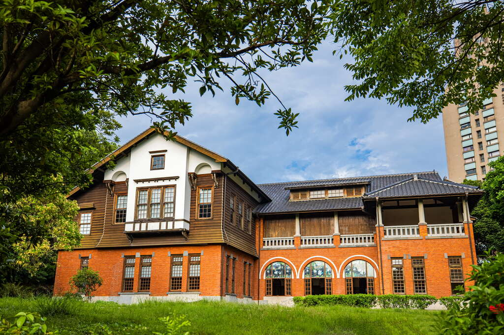
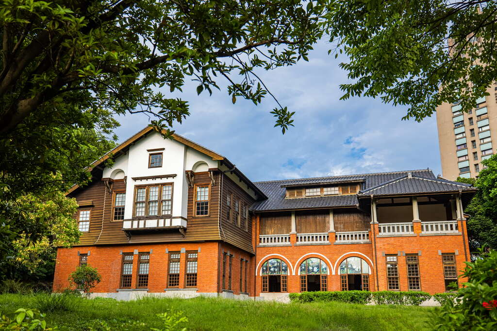

景點介紹
北投溫泉博物館前身為「北投公共浴場」，由日治時期的台北廳長井村大吉下令擘劃，總督府建築設計師森山松之助監造，完工於1913年(大正二年)6月17日，為和洋折衷風格的雙層建築，亦為當時東亞最大的溫泉公共浴場。 一樓浴池區為磚造，二樓休憩區為木造，入口處位於二樓。
北投溫泉博物館前身為「北投公共浴場」，由日治時期的台北廳長井村大吉下令擘劃，總督府建築設計師森山松之助監造，完工於1913年(大正二年)6月17日，為和洋折衷風格的雙層建築，亦為當時東亞最大的溫泉公共浴場。 一樓浴池區為磚造，二樓休憩區為木造，入口處位於二樓。
